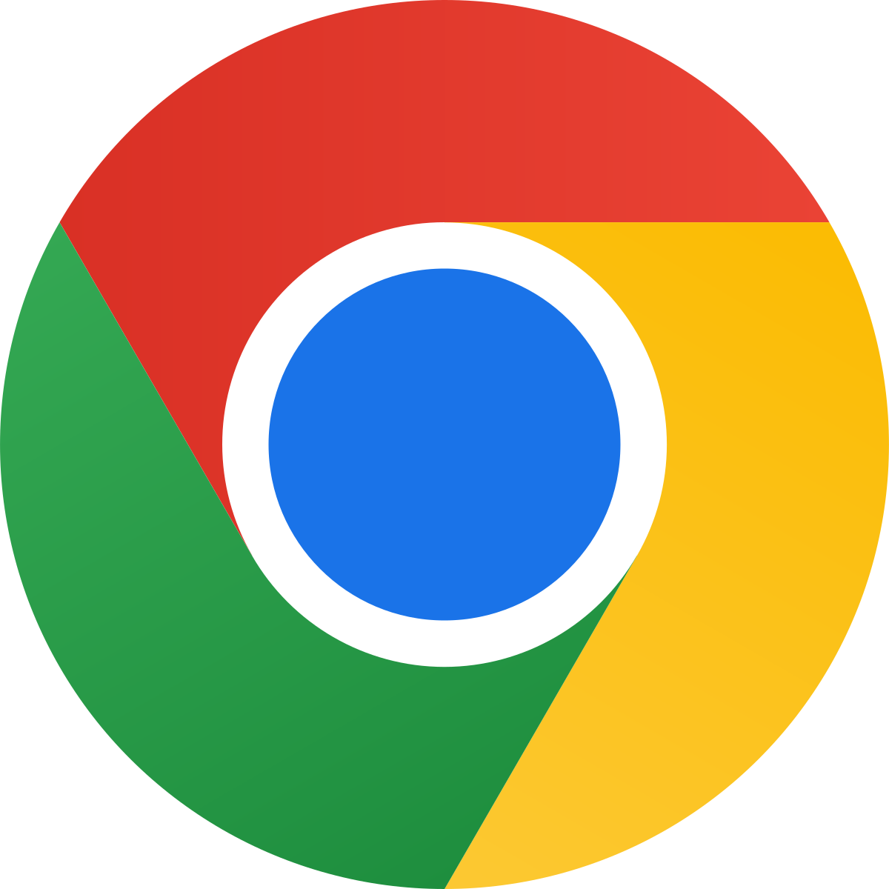

Google Chrome

Обзор
Простой обзор на Google Chrome, а точнее на инструменты разработчика. Рассмотрим разные возможности, которые я нашёл
в интернете и пользуюсь сам.
Инструменты разработчика. Просмотр HTML
HTML код показывается в инструментах разработчика, есть подсветка синтаксиса, выстроена собственная иерархия HTML, то есть она отлична от HTML-кода в файле. При изменении какого-нибудь элемента (например через JS), производится лёгкая анимация, которая позволяет понять, какие элементы изменились.
Стили
Стили показываются в отдельном окне от просмотра кода HTML. Просмотр стилей ведётся относительно выделенного блока HTML, код можно менять прямо на ходу, изменения будут отображены динамически на сайте. Есть возможность просмотра блока со всеми параметрами, типа margin, padding, длина и высота объекта.
Остальные плюшки
- Наличие консоли
- Просмотр размеров прямо на странице
- Просмотр источников сайта
- Просмотр сети для просмотра получаемых файлов
- Показ всех ошибок и вероятных проблем
Chrome Dev или Google Chrome для разработчиков мало чем отличается от основного браузера, разработчик выделяет следующие преимущества: возможность создавать
сайты для будущего?, возможность тестировки передовых API для web-плафторм и получение еженедельных обновлений?.